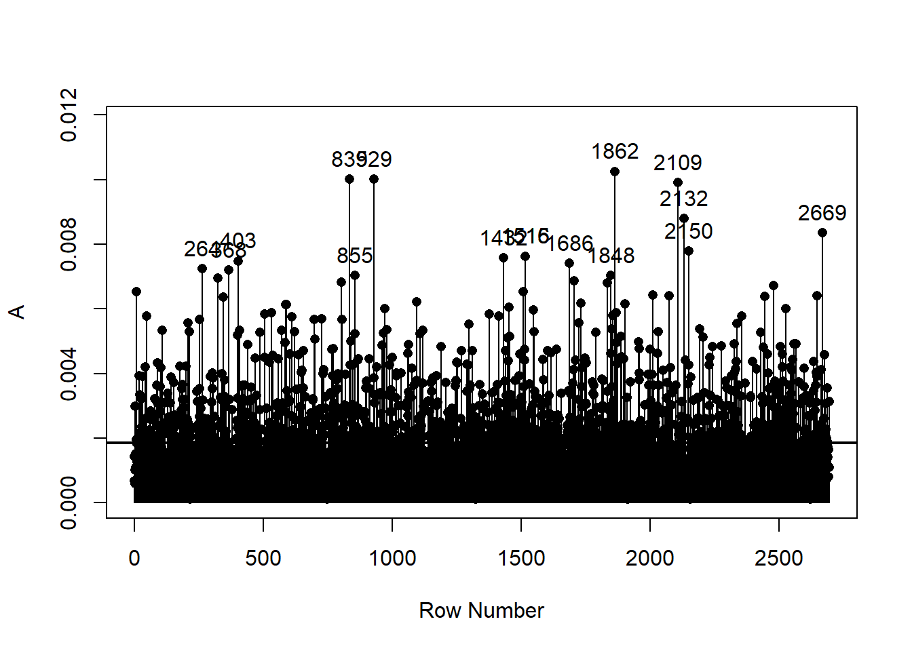
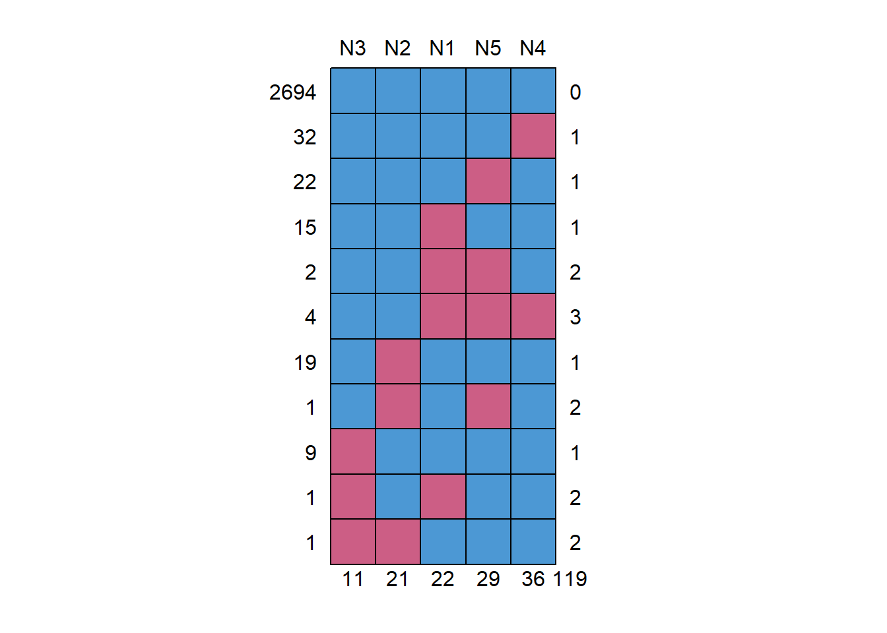

10 Dealing with missing data
Identifying potential influential cases
Data sets often contain outliers and influential cases. A case is influential if its inclusion in the data set significantly alters the parameters of interest (for instance a factor loading or the correlations between factors). Cook’s d statistic is often used in to identify inluential cases when data are analysed with univariate multiple regression. This can be extended to the multivariate case. The expected influence value is the number of manifest cases divided by the number of participants. Each person’s influence value can be compared to this expected value. In practice, the plot is most useful to identify people whose observed influence values are clearly different from those of the remaining people. The bollen_plot() function of the hemp package can be used to plot each person’s influence statistic. The horizontal line on the plot represents the expected value. If a critical value is supplied, the row numbers of cases that exceed the critical value are printed. Once such influential cases have been identified their observed data can be inspected to identify potential data entering errors or unusual response patterns. The analyst may choose to correct the incorrectly entered data points or perhaps to remove cases with response patterns. Data should be analysed with and without the influential cases and the results compared.
This chapter contains a simple demonstration of how researchers can deal with missing data in a test construction context using the lavaan and lavaan.mi packages in R. We demonstrate the following:
identifying missing data patterns,
performing Little’s MCAR test (missing completely at random),
using full information maximum likelihood (“fiml”) to estimate parameters in the presence of missing data, and
using multiple imputation to estimate parameters in the presence of missing data
We don’t address the philosophy, pitfalls, or merits of different methods of dealing with missing data, nor do we discuss the different methods of multiple imputation and pooling of results. We just show how a researcher can easily deal with missing data if they have made the decision to do so using either “fiml” or multiple imputation with the defaults of the relevant packages.
Mikko Rönkkö made nice videos about missing data and how to deal with it. He discusses different missing data mechanisms here: https://www.youtube.com/watch?v=TxcLeMsZ7Bk. He discusses full information maximum likelihood estimation here: https://www.youtube.com/watch?v=6CQ526G8rOk. Finally, he discusses multiple imputation here: https://www.youtube.com/watch?v=gQkd_MylHQ8.
10.1 R packages used in the demonstration
We use the following packages: psychTools (to access the bfi data set), mice (to detect the patterns of missing data), naniar (to perform Little’s MCAR test) , Amelia (to perform the multiple imputation), lavaan (to perform the confirmatory factor analysis), and lavaan.mi (to perform the confirmatory factor analysis with multiple complete data sets).
These packages need to be installed once. To install the packages you need to remove the # at the beginning of each row (R does not evaluate any code that follows a #).
#install.packages("psychTools")
#install.packages("naniar")
#install.packages("lavaan")
#install.packages("mice")
#install.packages("Amelia")The lavaan.mi package is not yet available from the CRAN repository, but it can be downloaded and installed from Terence Jorgenson’s github page. For this you will also need the remotes package.
#install.packages("remotes")
#remotes::install_github("TDJorgensen/lavaan.mi")10.2 CFA of the 5-item Neuroticism scale of the Big Five Inventory
I performed a confirmatory factor analysis of the Neuroticism scale of the Big Five Inventory. The data are in the bfi data frame, which can be found in the psychTools package. There were 2800 participants, but there were only 2694 complete cases. For convenience, I stored the five Neuroticism items (which are in columns 16 to 20 of the bfi data frame) in a new data frame called Ndata.
In this baseline analysis I ignored the missing data. By default, lavaan employs listwise deletion when missing data are encountered. At the top of the output it can be seen that the number of observed (n = 2800) and used (n = 2694) cases differ.
library(psychTools)
library(lavaan)
library(lavaan.mi)
Ndata <- bfi[16:20]
Nmodel <- '
Nfactor =~ N1 + N2 + N3 + N4 + N5
'
fit.Nmodel <- cfa(Nmodel,
data = Ndata,
estimator = "MLR")
summary(fit.Nmodel,
standardized = TRUE,
fit.measures = TRUE)lavaan 0.6-19 ended normally after 26 iterations
Estimator ML
Optimization method NLMINB
Number of model parameters 10
Used Total
Number of observations 2694 2800
Model Test User Model:
Standard Scaled
Test Statistic 360.932 313.521
Degrees of freedom 5 5
P-value (Chi-square) 0.000 0.000
Scaling correction factor 1.151
Yuan-Bentler correction (Mplus variant)
Model Test Baseline Model:
Test statistic 4724.621 3492.154
Degrees of freedom 10 10
P-value 0.000 0.000
Scaling correction factor 1.353
User Model versus Baseline Model:
Comparative Fit Index (CFI) 0.925 0.911
Tucker-Lewis Index (TLI) 0.849 0.823
Robust Comparative Fit Index (CFI) 0.925
Robust Tucker-Lewis Index (TLI) 0.849
Loglikelihood and Information Criteria:
Loglikelihood user model (H0) -23078.504 -23078.504
Scaling correction factor 1.007
for the MLR correction
Loglikelihood unrestricted model (H1) -22898.038 -22898.038
Scaling correction factor 1.055
for the MLR correction
Akaike (AIC) 46177.007 46177.007
Bayesian (BIC) 46235.995 46235.995
Sample-size adjusted Bayesian (SABIC) 46204.222 46204.222
Root Mean Square Error of Approximation:
RMSEA 0.163 0.151
90 Percent confidence interval - lower 0.149 0.138
90 Percent confidence interval - upper 0.177 0.165
P-value H_0: RMSEA <= 0.050 0.000 0.000
P-value H_0: RMSEA >= 0.080 1.000 1.000
Robust RMSEA 0.162
90 Percent confidence interval - lower 0.147
90 Percent confidence interval - upper 0.178
P-value H_0: Robust RMSEA <= 0.050 0.000
P-value H_0: Robust RMSEA >= 0.080 1.000
Standardized Root Mean Square Residual:
SRMR 0.056 0.056
Parameter Estimates:
Standard errors Sandwich
Information bread Observed
Observed information based on Hessian
Latent Variables:
Estimate Std.Err z-value P(>|z|) Std.lv Std.all
Nfactor =~
N1 1.000 1.286 0.818
N2 0.952 0.017 54.734 0.000 1.225 0.803
N3 0.892 0.028 31.540 0.000 1.147 0.717
N4 0.677 0.030 22.224 0.000 0.872 0.554
N5 0.632 0.030 21.255 0.000 0.813 0.502
Variances:
Estimate Std.Err z-value P(>|z|) Std.lv Std.all
.N1 0.819 0.048 16.954 0.000 0.819 0.331
.N2 0.828 0.046 18.124 0.000 0.828 0.356
.N3 1.245 0.052 23.807 0.000 1.245 0.486
.N4 1.714 0.055 31.118 0.000 1.714 0.693
.N5 1.968 0.057 34.381 0.000 1.968 0.748
Nfactor 1.655 0.065 25.460 0.000 1.000 1.00010.3 Examining patterns of missing data and testing for “missing completely at random”
Next, I employed the md.pattern() function of the mice package to identify the patterns of missing data. I also used the mcar_test() function of the naniar package to perform Little’s missing completely at random (MCAR) test. There were 11 missing data patterns. There were 11 missing values for item N3, 21 for item N2, 22 for item N1, 29 for item N5, and 36 for item N4, which gives a total of 119 missing values. The pattern with the most missing values contained three missing values (four persons produced this pattern).
Little’s MCAR test showed that the null hypothesis that the missing data are completely at random could not be rejected: \(\chi^2(34) = 27.2, p = 0.791\)
library(mice)
md.pattern(Ndata)
N3 N2 N1 N5 N4
2694 1 1 1 1 1 0
32 1 1 1 1 0 1
22 1 1 1 0 1 1
15 1 1 0 1 1 1
2 1 1 0 0 1 2
4 1 1 0 0 0 3
19 1 0 1 1 1 1
1 1 0 1 0 1 2
9 0 1 1 1 1 1
1 0 1 0 1 1 2
1 0 0 1 1 1 2
11 21 22 29 36 119library(naniar)
mcar_test(Ndata)# A tibble: 1 × 4
statistic df p.value missing.patterns
<dbl> <dbl> <dbl> <int>
1 27.2 34 0.791 1110.4 Full information maximum likelihood estimation
Second, I estimated the parameters of the confirmatory factor analysis model using full information maximum likelihood (“fiml”). This approach uses all the available information in the data set to estimate the parameters. It does not estimate what the missing values would be and it does not fill it in to complete the data set. Note that all 2800 cases were now used.
fit.Nmodel.fiml <- cfa(Nmodel,
data = Ndata,
estimator = "MLR",
missing = "fiml",
fixed.x = FALSE)
summary(fit.Nmodel.fiml,
standardized = TRUE,
fit.measures = TRUE)lavaan 0.6-19 ended normally after 30 iterations
Estimator ML
Optimization method NLMINB
Number of model parameters 15
Number of observations 2800
Number of missing patterns 11
Model Test User Model:
Standard Scaled
Test Statistic 372.501 322.671
Degrees of freedom 5 5
P-value (Chi-square) 0.000 0.000
Scaling correction factor 1.154
Yuan-Bentler correction (Mplus variant)
Model Test Baseline Model:
Test statistic 4874.228 3604.773
Degrees of freedom 10 10
P-value 0.000 0.000
Scaling correction factor 1.352
User Model versus Baseline Model:
Comparative Fit Index (CFI) 0.924 0.912
Tucker-Lewis Index (TLI) 0.849 0.823
Robust Comparative Fit Index (CFI) 0.924
Robust Tucker-Lewis Index (TLI) 0.848
Loglikelihood and Information Criteria:
Loglikelihood user model (H0) -23768.675 -23768.675
Scaling correction factor 1.004
for the MLR correction
Loglikelihood unrestricted model (H1) -23582.425 -23582.425
Scaling correction factor 1.041
for the MLR correction
Akaike (AIC) 47567.350 47567.350
Bayesian (BIC) 47656.411 47656.411
Sample-size adjusted Bayesian (SABIC) 47608.751 47608.751
Root Mean Square Error of Approximation:
RMSEA 0.162 0.151
90 Percent confidence interval - lower 0.148 0.138
90 Percent confidence interval - upper 0.176 0.164
P-value H_0: RMSEA <= 0.050 0.000 0.000
P-value H_0: RMSEA >= 0.080 1.000 1.000
Robust RMSEA 0.163
90 Percent confidence interval - lower 0.148
90 Percent confidence interval - upper 0.179
P-value H_0: Robust RMSEA <= 0.050 0.000
P-value H_0: Robust RMSEA >= 0.080 1.000
Standardized Root Mean Square Residual:
SRMR 0.049 0.049
Parameter Estimates:
Standard errors Sandwich
Information bread Observed
Observed information based on Hessian
Latent Variables:
Estimate Std.Err z-value P(>|z|) Std.lv Std.all
Nfactor =~
N1 1.000 1.284 0.818
N2 0.956 0.017 55.605 0.000 1.227 0.804
N3 0.896 0.028 32.194 0.000 1.151 0.718
N4 0.677 0.030 22.550 0.000 0.869 0.554
N5 0.632 0.029 21.614 0.000 0.811 0.501
Intercepts:
Estimate Std.Err z-value P(>|z|) Std.lv Std.all
.N1 2.932 0.030 98.558 0.000 2.932 1.867
.N2 3.508 0.029 121.478 0.000 3.508 2.300
.N3 3.217 0.030 106.137 0.000 3.217 2.008
.N4 3.185 0.030 106.886 0.000 3.185 2.030
.N5 2.969 0.031 96.676 0.000 2.969 1.834
Variances:
Estimate Std.Err z-value P(>|z|) Std.lv Std.all
.N1 0.818 0.047 17.284 0.000 0.818 0.331
.N2 0.821 0.045 18.271 0.000 0.821 0.353
.N3 1.242 0.051 24.204 0.000 1.242 0.484
.N4 1.707 0.054 31.557 0.000 1.707 0.693
.N5 1.962 0.056 34.977 0.000 1.962 0.749
Nfactor 1.649 0.064 25.915 0.000 1.000 1.00010.5 Multiple imputation with the Amelia and lavaan.mi packages
Next, I used the Amelia and lavaan.mi packages to (a) perform multiple imputation to obtain 20 data sets that contain plausible estimates of the missing values, (b) fit the confirmatory factor analysis model to each of the data sets, and (c) report the pooled results.
The 20 complete data sets were stored as a list in an object I labeled Ndata.mi. I stored this list in a new object I labeled imps.
library(Amelia)
library(lavaan.mi)
set.seed(12345)
Ndata.mi <- amelia(Ndata,
m = 20)
imps <- Ndata.mi$imputations10.5.1 Fit the model to the imputed data sets and pool the results
I fitted the confirmatory factor analysis model to the imputed data sets in imps using the cfa.mi() function of the lavaan.mi package. The results are stored in fit.Nmodel.mi. We access the results by asking for a summary. Note that the parameter estimates are very similar to those obtained with listwise deletion and full information maximum likelihood estimation. Also, the standard errors of the parameters are very similar across the three analyses.
fit.Nmodel.mi <- cfa.mi(Nmodel,
data = imps,
estimator = "MLR")
summary(fit.Nmodel.mi,
fit.measures = TRUE,
standardized = TRUE)lavaan.mi object fit to 20 imputed data sets using:
- lavaan (0.6-19)
- lavaan.mi (0.1-0.0030)
See class?lavaan.mi help page for available methods.
Convergence information:
The model converged on 20 imputed data sets.
Standard errors were available for all imputations.
Estimator ML
Optimization method NLMINB
Number of model parameters 10
Number of observations 2800
Model Test User Model:
Standard Scaled
Test statistic 375.374 326.698
Degrees of freedom 5 5
P-value 0.000 0.000
Average scaling correction factor 1.149
Pooling method D4
Pooled statistic "standard"
"yuan.bentler.mplus" correction applied AFTER pooling
Model Test Baseline Model:
Test statistic 4849.800 3598.394
Degrees of freedom 10 10
P-value 0.000 0.000
Scaling correction factor 1.348
User Model versus Baseline Model:
Comparative Fit Index (CFI) 0.923 0.910
Tucker-Lewis Index (TLI) 0.847 0.821
Robust Comparative Fit Index (CFI) 0.924
Robust Tucker-Lewis Index (TLI) 0.847
Loglikelihood and Information Criteria:
Loglikelihood user model (H0) -23961.856 -23961.856
Scaling correction factor 1.005
for the MLR correction
Loglikelihood unrestricted model (H1) -23770.632 -23770.632
Scaling correction factor 1.054
for the MLR correction
Akaike (AIC) 47943.711 47943.711
Bayesian (BIC) 48003.085 48003.085
Sample-size adjusted Bayesian (SABIC) 47971.312 47971.312
Root Mean Square Error of Approximation:
RMSEA 0.163 0.152
90 Percent confidence interval - lower 0.149 0.139
90 Percent confidence interval - upper 0.177 0.165
P-value H_0: RMSEA <= 0.050 0.000 0.000
P-value H_0: RMSEA >= 0.080 1.000 1.000
Robust RMSEA 0.162
90 Percent confidence interval - lower 0.148
90 Percent confidence interval - upper 0.178
P-value H_0: Robust RMSEA <= 0.050 0.000
P-value H_0: Robust RMSEA >= 0.080 1.000
Standardized Root Mean Square Residual:
SRMR 0.057 0.057
Parameter Estimates:
Standard errors Sandwich
Information bread Observed
Observed information based on Hessian
Pooled across imputations Rubin's (1987) rules
Augment within-imputation variance Scale by average RIV
Wald test for pooled parameters t(df) distribution
Pooled t statistics with df >= 1000 are displayed with
df = Inf(inity) to save space. Although the t distribution
with large df closely approximates a standard normal
distribution, exact df for reporting these t tests can be
obtained from parameterEstimates.mi()
Latent Variables:
Estimate Std.Err t-value df P(>|t|) Std.lv
Nfactor =~
N1 1.000 1.285
N2 0.955 0.017 55.650 Inf 0.000 1.227
N3 0.896 0.028 32.023 Inf 0.000 1.151
N4 0.677 0.030 22.524 Inf 0.000 0.870
N5 0.631 0.029 21.570 Inf 0.000 0.811
Std.all
0.818
0.804
0.719
0.554
0.501
Variances:
Estimate Std.Err t-value df P(>|t|) Std.lv
.N1 0.818 0.047 17.270 Inf 0.000 0.818
.N2 0.821 0.045 18.257 Inf 0.000 0.821
.N3 1.239 0.051 24.060 Inf 0.000 1.239
.N4 1.707 0.054 31.524 Inf 0.000 1.707
.N5 1.961 0.056 34.947 Inf 0.000 1.961
Nfactor 1.650 0.064 25.835 Inf 0.000 1.000
Std.all
0.331
0.353
0.483
0.693
0.749
1.00010.6 Multiple imputation with ordinal variables
The items of the Neuroticism scale are strictly ordinal with six ordered categories. The observed values should be 1, 2, 3, 4, 5 or 6. If we don’t instruct amelia() to treat the items as ordinal, the function will treat them as continuous variables and the imputed values will contain decimals (which is not what we want). The imputed values may even extend beyond the range of the original six-point rating scale (which is really not what we want). Here I impute the missing data with the amelia() function, but now with the added argument that the items are ordinal. The imputed values will now be integers rather than decimals, which is what we want. The results are almost indistinguishable from the previous results.
library(Amelia)
library(lavaan.mi)
set.seed(12345)
Ndata.mi2 <- amelia(Ndata,
m = 20,
ords = c("N1", "N2", "N3", "N4", "N5"))
imps2 <- Ndata.mi2$imputationsfit.Nmodel.mi2 <- cfa.mi(Nmodel,
data = imps2,
estimator = "MLR")
summary(fit.Nmodel.mi2,
fit.measures = TRUE,
standardized = TRUE)lavaan.mi object fit to 20 imputed data sets using:
- lavaan (0.6-19)
- lavaan.mi (0.1-0.0030)
See class?lavaan.mi help page for available methods.
Convergence information:
The model converged on 20 imputed data sets.
Standard errors were available for all imputations.
Estimator ML
Optimization method NLMINB
Number of model parameters 10
Number of observations 2800
Model Test User Model:
Standard Scaled
Test statistic 363.290 315.881
Degrees of freedom 5 5
P-value 0.000 0.000
Average scaling correction factor 1.150
Pooling method D4
Pooled statistic "standard"
"yuan.bentler.mplus" correction applied AFTER pooling
Model Test Baseline Model:
Test statistic 4776.413 3547.745
Degrees of freedom 10 10
P-value 0.000 0.000
Scaling correction factor 1.346
User Model versus Baseline Model:
Comparative Fit Index (CFI) 0.925 0.912
Tucker-Lewis Index (TLI) 0.850 0.824
Robust Comparative Fit Index (CFI) 0.925
Robust Tucker-Lewis Index (TLI) 0.850
Loglikelihood and Information Criteria:
Loglikelihood user model (H0) -23982.925 -23982.925
Scaling correction factor 1.003
for the MLR correction
Loglikelihood unrestricted model (H1) -23795.906 -23795.906
Scaling correction factor 1.052
for the MLR correction
Akaike (AIC) 47985.849 47985.849
Bayesian (BIC) 48045.223 48045.223
Sample-size adjusted Bayesian (SABIC) 48013.449 48013.449
Root Mean Square Error of Approximation:
RMSEA 0.160 0.149
90 Percent confidence interval - lower 0.146 0.136
90 Percent confidence interval - upper 0.174 0.162
P-value H_0: RMSEA <= 0.050 0.000 0.000
P-value H_0: RMSEA >= 0.080 1.000 1.000
Robust RMSEA 0.160
90 Percent confidence interval - lower 0.145
90 Percent confidence interval - upper 0.175
P-value H_0: Robust RMSEA <= 0.050 0.000
P-value H_0: Robust RMSEA >= 0.080 1.000
Standardized Root Mean Square Residual:
SRMR 0.057 0.057
Parameter Estimates:
Standard errors Sandwich
Information bread Observed
Observed information based on Hessian
Pooled across imputations Rubin's (1987) rules
Augment within-imputation variance Scale by average RIV
Wald test for pooled parameters t(df) distribution
Pooled t statistics with df >= 1000 are displayed with
df = Inf(inity) to save space. Although the t distribution
with large df closely approximates a standard normal
distribution, exact df for reporting these t tests can be
obtained from parameterEstimates.mi()
Latent Variables:
Estimate Std.Err t-value df P(>|t|) Std.lv
Nfactor =~
N1 1.000 1.284
N2 0.955 0.017 55.326 Inf 0.000 1.226
N3 0.896 0.028 32.064 Inf 0.000 1.151
N4 0.678 0.030 22.568 Inf 0.000 0.870
N5 0.631 0.029 21.614 Inf 0.000 0.810
Std.all
0.817
0.803
0.718
0.554
0.501
Variances:
Estimate Std.Err t-value df P(>|t|) Std.lv
.N1 0.823 0.047 17.334 Inf 0.000 0.823
.N2 0.827 0.045 18.370 Inf 0.000 0.827
.N3 1.243 0.051 24.148 Inf 0.000 1.243
.N4 1.712 0.054 31.665 Inf 0.000 1.712
.N5 1.963 0.056 35.022 Inf 0.000 1.963
Nfactor 1.650 0.064 25.816 Inf 0.000 1.000
Std.all
0.333
0.355
0.484
0.693
0.749
1.000